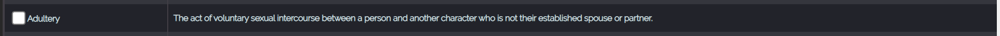
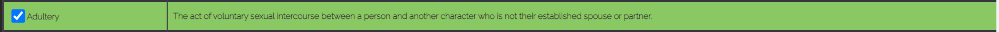
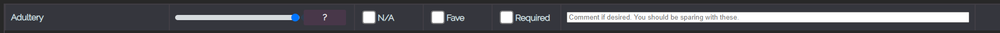
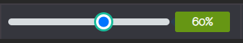
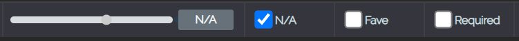
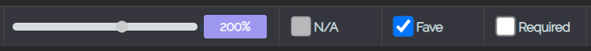
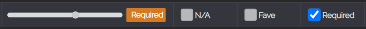
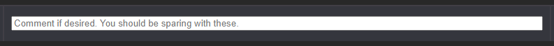

Hello.
Welcome to Kinko.
A tool for sharing your kinks and roleplaying preferences.
Kinko is designed to offer an easy way to specify your likes, dislikes and requirements for ERP.
This is the help documentation. If you’re looking for the tool itself click here. If you came from the tool itself; check it’s not already open in a new tab.
Tutorial
Kinko has a massive list of kinks from various ERP communities. For this reason it’s encouraged that a roleplayer chooses what kinks they wish to show and share over others. Sure there’s nothing stopping you from going through all the kinks if you have the patience, but most will settle for just showing what they enjoy roleplaying most.
Remember what you're seeing in the webpage is the editor. It's the tool you use to make your Kinko. Which is a searchable list of kinks in HTML format. You can only see the result of your labour by clicking the download button once you're done.
To find the kinks you want to display it’s encouraged you use the search bar.
This search bar will look through kink names and their descriptions to find the most accurate matches. There’s no clever algorithms going on here, so you may have to try a few variations until you find it.
Once you have found the kink you're looking for. It will look something like this:

Each kink has a name, and a description.
To enable a kink. Tick the box on the left-hand side.

Once enabled it will appear in the second section below the search area.
Like so.

Here you have several methods of adjusting your preferences towards a kink.
The first is a simple slider.

This slider has 10 increments from 10 to 100.
| 100% | You adore the kink and it's in most roleplays. |
|---|
| 90% | You love the kink. It's close to being at the very top of your list. |
|---|
| 80% | You love the kink. It's up there with the best of them. |
|---|
| 70% | You like the kink. It's not a favourite but it's always a kink you enjoy. |
|---|
| 60% | You don't mind the kink at all. It's far from a favourite but it's always a kink you can play out. |
|---|
| 50% | You're okay with the kink. It's not loved, or hated. You could go either way based on the idea. |
|---|
| 40% | You're okay with the kink. It doesn't really get you going so to speak, but you don't hate it. |
|---|
| 30% | You're not a big fan of the kink, but in the right situations you can see yourself playing it out. |
|---|
| 20% | You don't like the idea of the kink, but you're willing to try it in very specific situations. |
|---|
| 10% | You don't like the idea of the kink, but there's always the possibility that the planets will align and it will work for you. |
|---|
| 0% | You don't like the kink. It doesn't appeal to you and you don't ever think it will. |
|---|
There are a few other options aside from a flat value to associate

"N/A" Is the value given to kinks where you cannot form an opinion or there are special circumstances that mean it's very variable. Perhaps it's a kink you have never tried before, or perhaps you're only prepared to do it when playing the dominant party. The reasons for N/A are usually explained in a comment.

"Fave" or "200%" is given to kinks that you with to elevate above all others. These are kinks that you feel passionately about, or have a strong enough love for them, that you wish to differentiate them from the others.

"Required" is given to kinks or preferences that are essential for every single roleplay. As in, you will not conduct an ERP without these involved.

The comment box allows you to add context information to your kink. Basically it creates a tool-tip next to your preference that allows the user to hover over and see your comment. It allows you to explain certain kinks, preferences or reasonings.
You will also notice a number of buttons to the right of the search bar. These have different actions.
 | Save Clicking this will locally save your preferences. In other words if you close your browser and come back, you won't have lost everything.
|
|---|
 | Load Clicking this will load whatever preferences you have previously saved. It will overwrite any new preferences you have started since then so be careful.
|
|---|
 | Import Clicking this will prompt you to input Kinko code. It's a way of loading a previous Kinko table you downloaded. IN DEVELOPMENT
|
|---|
 | Download Downloads your current Kinko settings as a HTML file you can open. If you want to embed this you will need to open it in a text editor and paste it into your HTML-Javascript enabled webiste/profile.
|
|---|
 | Help Opens this page in a new tab.
|
|---|
 | Reset Erases everything. As if you were arriving on the page for the first time. Deletes all your saves. The only real use for this is if something goes horribly wrong with the save feature, or perhaps you have multiple characters with different preferences.
|
|---|